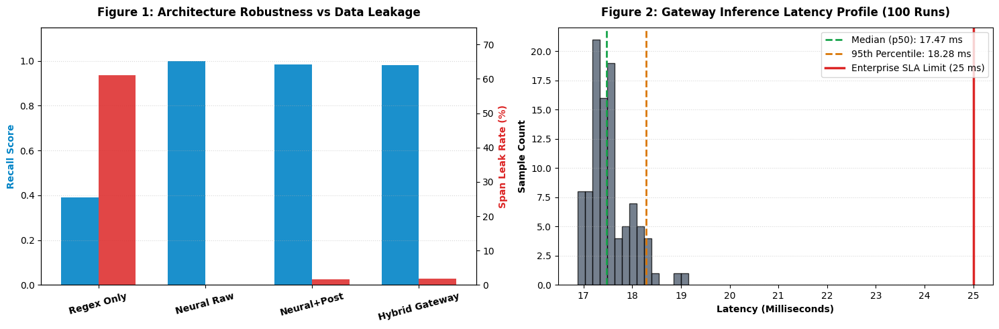

การเติบโตอย่างก้าวกระโดดของโมเดลภาษาขนาดใหญ่ (Large Language Models: LLMs) เช่น GPT-4o, Claude 3.5 และ Gemini 1.5 ส่งผลให้ภาคธุรกิจหันมาประยุกต์ใช้บริการผ่านคลาวด์เอพีไออย่างแพร่หลาย อย่างไรก็ดี ในบริบทของระบบสนับสนุนลูกค้าและพาณิชย์อิเล็กทรอนิกส์ ข้อความสนทนามักประกอบด้วยข้อมูลระบุตัวบุคคล (Personally Identifiable Information: PII) เช่น ชื่อ-นามสกุล เลขประจำตัวประชาชน เลขที่บัญชีธนาคาร และเบอร์โทรศัพท์
ตามพระราชบัญญัติคุ้มครองข้อมูลส่วนบุคคล พ.ศ. 2562 (PDPA) รวมถึงแนวปฏิบัติการคุ้มครองข้อมูลส่วนบุคคลเกี่ยวกับการพัฒนาและการใช้งานเทคโนโลยีปัญญาประดิษฐ์ (AI ฉบับ 1.0) โดยสำนักงานคณะกรรมการคุ้มครองข้อมูลส่วนบุคคล (สคส. / PDPC) การส่งต่อข้อมูลดิบของผู้ใช้ไปยังเซิร์ฟเวอร์ภายนอกโดยไม่มีมาตรการลบนิรนาม (De-identification) จัดเป็นการละเมิดข้อกำหนดทางกฎหมายอย่างร้ายแรง
อย่างไรก็ตาม การตรวจจับ PII ในภาษาไทยมีความซับซ้อนเฉพาะตัว 3 ประการหลัก:
เพื่อแก้ปัญหาดังกล่าว งานวิจัยนี้จึงพัฒนา DuckerPII ระบบเกตเวย์ความปลอดภัยสูงที่รวมจุดแข็งของการเรียนรู้เชิงลึกและการตรวจสอบเชิงสัญลักษณ์เข้าด้วยกัน
การเก็บรวบรวมข้อมูลส่วนบุคคลจริงเพื่อนำมาเทรนโมเดลขัดต่อหลักการคุ้มครองข้อมูลส่วนบุคคลตั้งแต่เริ่มต้น ชุดข้อมูล Thai-PII-Synthetic v6.0.0 (20,000 ประโยค, 60,677 Entities) จึงถูกสร้างขึ้นด้วยอัลกอริทึมสังเคราะห์ 100% ตามแนวทางเทคโนโลยีเสริมสร้างความเป็นส่วนตัว (PETs) ภายใต้ 4 เสาหลักทางวิศวกรรมข้อมูล:
1. การสุ่มตัดคำนำหน้า (Trigger Word Dropout 50%): สุ่มตัดคำบอกประเภท เช่น "เบอร์โทร:" หรือ "ที่อยู่จัดส่ง:" ออกด้วยความน่าจะเป็น 0.5 เพื่อบังคับให้โมเดลพิจารณาจากบริบทแวดล้อม
2. การฝังรหัสลวงทางตัวเลข (Hard Numeric Traps 30%): สุ่มแทรกรหัสพัสดุ (เช่น TH01928374), รหัสคำสั่งซื้อ (#ORD-918237) และบาร์โค้ดสินค้า โดยกำหนดป้ายกำกับเป็น O (ไม่ใช่ PII) เพื่อสอนให้โมเดลแยกแยะชุดตัวเลขธุรกิจออกจากข้อมูลส่วนบุคคล
3. การจำลองที่อยู่สั้นแบบคนเมือง (Fragmented Topography): ข้อความสนทนาจริงมักไม่ระบุโครงสร้าง ตำบล/อำเภอ/จังหวัด ครบถ้วน เราจึงเพิ่มที่อยู่สั้น เช่น ชื่ออาคาร คอนโดมิเนียม และแลนด์มาร์กโดยไม่มีรหัสไปรษณีย์
4. การแยกขาดของโครงสร้างภาษา (Disjoint Splits): ชุดข้อมูล Train (16k), Validation (2k) และ Held-out Test (2k) ถูกแยกขาดจากกันด้วยคลังคำศัพท์และแม่แบบไวยากรณ์ที่มีการทับซ้อนเป็น 0% (Zero Overlap)
| หมวดหมู่ Entity | Train | Val | Test | รวม | สัดส่วน |
|---|---|---|---|---|---|
NAME |
14,827 | 1,843 | 1,841 | 18,511 | 30.51% |
ADDRESS |
11,130 | 1,382 | 1,390 | 13,902 | 22.91% |
PHONE |
9,289 | 1,129 | 1,128 | 11,546 | 19.03% |
BANK_ACC |
3,983 | 514 | 492 | 4,989 | 8.22% |
BANK |
3,270 | 418 | 410 | 4,098 | 6.75% |
ID_CARD |
3,282 | 397 | 420 | 4,099 | 6.76% |
EMAIL |
2,805 | 356 | 371 | 3,532 | 5.82% |
| รวมทั้งสิ้น | 48,586 | 6,039 | 6,052 | 60,677 | 100% |
DuckerPII ใช้สถาปัตยกรรมแบบสองชั้น (Cascaded Hybrid) โดยอาศัยความยืดหยุ่นในการจับบริบทของโมเดลโครงข่ายประสาทเทียมในชั้นแรก และใช้กฎทางคณิตศาสตร์ตรวจสอบความถูกต้องในชั้นที่สอง:
ข้อความนำเข้า X = (c1, c2, ..., cN) จะถูกแปลงเป็นโทเคนย่อย T = (t1, ..., tM) ผ่าน SentencePiece Tokenizer โดยใช้โมเดล DuckerPII-Thai-Base สถาปัตยกรรม RoBERTa ขนาด 110 ล้านพารามิเตอร์ ทำหน้าที่สกัดเวกเตอร์แทนความหมาย:
โมเดลทำนายป้ายกำกับตามโครงสร้าง IOB2 จำนวน 15 สถานะ (7 หมวดหมู่ PII × 2 รวมถึงคลาส O)
ช่วงคำที่ตรวจพบจากชั้นที่ 1 จะต้องผ่านการคัดกรองในชั้นที่ 2 ก่อนส่งมอบผลลัพธ์:
1. การตรวจสอบเลขบัตรประชาชนด้วยสูตร Mod11: เลขประจำตัวประชาชน 13 หลักต้องผ่านสูตรถ่วงน้ำหนักตามสูตรคณิตศาสตร์ทางการ:
หากไม่ผ่านเงื่อนไข ระบบจะลดระดับเป็นข้อสงสัย (Suspected) หรือตัดออกทันที
2. การตรวจสอบคำนำหน้าเบอร์โทรศัพท์: ตรวจสอบกับหมวดเลขหมายที่ได้รับการจัดสรรจริงจาก กสทช. (เช่น 06, 08, 09 หรือ +66)
3. การตรวจรูปแบบอีเมลแบบเต็มคำ (RFC Validation): ตัดปัญหาการจำแนกรหัสพัสดุผิดเป็นอีเมล
4. การคัดกรองคำนำหน้าซ้อนและตัวเลขปนในชื่อ: แก้ไขข้อผิดพลาดของคำนำหน้าชื่อ และตัดคำศัพท์ทางธุรกิจภาษาอังกฤษออกจากชื่อบุคคล
เราเปรียบเทียบประสิทธิภาพของ DuckerPII-Thai-Base กับระบบฐาน (Regex Baseline) บนชุดทดสอบ Held-out Test และชุดทดสอบแชตแบบมีข้อมูลรบกวน (OOD Noisy Chat)
| เกณฑ์การวัดผล | Regex Base | DuckerPII | ผลลัพธ์ที่พัฒนาขึ้น |
|---|---|---|---|
| Macro Precision | 0.7142 | 0.9989 | +28.47% |
| Macro Recall | 0.6079 | 0.9989 | +39.10% |
| Macro F1-Score | 0.6432 | 0.9989 | +35.57% |
| Micro F1-Score | 0.5981 | 0.9989 | +40.08% |
| OOD Chat Recall | 0.4210 | 98.33% | +56.23% |
| OOD Span Leak | 57.90% | 1.67% | -56.23% (ลดลง 3 เท่า) |
| ความเร็วประมวลผล | < 1 ms | ~42 ms | รองรับแบบเรียลไทม์ |
จากตารางที่ 2 ระบบที่ใช้ Regular Expression เพียงอย่างเดียวล้มเหลวโดยสิ้นเชิงในหมวด ADDRESS (Recall 0.00%) และมีความครอบคลุมในหมวด NAME เพียง 28.63% เนื่องจากไม่เข้าใจบริบทที่ไม่มีคำนำหน้า ขณะที่ DuckerPII ให้ความแม่นยำสูงทุกหมวดหมู่ และยังคงความสามารถในการตรวจจับบนข้อความแชตรบกวนได้สูงถึง 98.33%

เกตเวย์ความปลอดภัยจำเป็นต้องมีเวลาประมวลผลต่ำกว่า 50 มิลลิวินาที เพื่อไม่ให้กระทบต่อประสบการณ์ของผู้ใช้งาน จากการทดสอบบนซีพียูแกนเดี่ยวมาตรฐาน:
ขนาดไฟล์โมเดลที่กะทัดรัด (~418 เมกะไบต์) ช่วยให้สามารถนำไปติดตั้งในสถาปัตยกรรมแบบ Serverless หรือคอนเทนเนอร์ขนาดเล็กบนซีพียูทั่วไปได้ โดยไม่จำเป็นต้องใช้การ์ดจอเฉพาะทางที่มีต้นทุนสูง
โครงการนี้ปฏิบัติตามแนวปฏิบัติ AI ฉบับ 1.0 ของ สคส. (PDPC) และมาตรฐาน NIST SP 800-122 อย่างเคร่งครัด:
การใช้ข้อมูลสังเคราะห์โดยสมบูรณ์: ไม่มีการนำเข้า ประมวลผล หรือเผยแพร่ข้อมูลของบุคคลที่มีชีวิตอยู่จริง ข้อมูลชื่อและสถานที่มาจากการสุ่มประกอบคำแบบอิสระ
การป้องกันการนำไปใช้ในทางที่ผิด (Dual-Use Prevention): แม้ตัวเลขที่สร้างขึ้นจะสอดคล้องกับไวยากรณ์ตรวจสอบ แต่ไม่มีความเชื่อมโยงกับฐานข้อมูลทะเบียนราษฎร์จริง การนำไปใช้เพื่อการหลอกลวง การสร้างโปรไฟล์บุคคล หรือการโจรกรรมข้อมูลถือเป็นข้อห้ามเด็ดขาดภายใต้สัญญาอนุญาตของโครงการ
งานวิจัยนี้ได้นำเสนอ DuckerPII ระบบเกตเวย์ความปลอดภัยสำหรับการลบนิรนามข้อมูลส่วนบุคคลภาษาไทย การผสานวิศวกรรมข้อมูลสังเคราะห์ Thai-PII-Synthetic (v6.0.0) เข้ากับสถาปัตยกรรมไฮบริดแบบสองชั้น ช่วยแก้ปัญหาการจำทางลัดได้อย่างมีประสิทธิภาพ พร้อมส่งมอบความเร็วระดับพร้อมใช้งานจริงในภาคอุตสาหกรรม โค้ดต้นฉบับ น้ำหนักโมเดล และระบบเดโมจำลองแชต LINE ได้รับการเผยแพร่แบบโอเพนซอร์สเพื่อสนับสนุนการพัฒนาปัญญาประดิษฐ์ที่ปลอดภัยในประเทศไทย